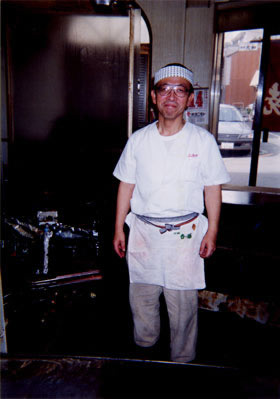

|
ふみや
|
|
 |
| ギトギトの「きも焼き」とヌルヌルの床。。。［s53卒・富田 栄］ |
| ごんな、ふみや、たみや、…おいしいお店でした。アド街ック天国でふみやは今も健在であることを知りましたが、他の店は今もあるのでしょうか？ ［s58卒・男性］ |
| ふみやのお好み焼。あのおっさんは絶対こんやろ。 ［h7卒・男性］ |
●ハガキでリクエストいただいた方は、卒年・性別で掲載させていただきました。ホームページからリクエストいただいた方は、お名前をそのまま掲載しています。不都合がございましたら、web担当宛てにご連絡ください。